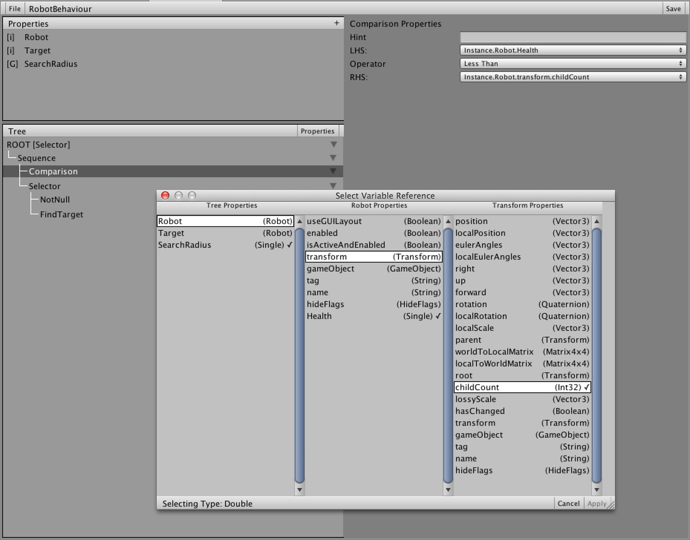
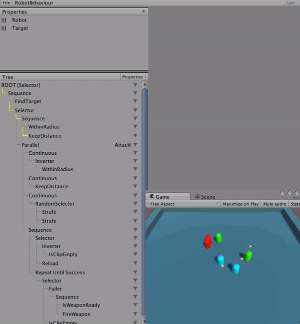

Beck Sebenius


Behaviour Trees are a key tool in an AI Designer’s toolbox. The idea got traction in the early 2000s as a way to define the behavior of an AI agent, and has since evolved into a standardized set of terms and techniques used across the games industry.
In this post, I am going to outline the process I took to implement a behaviour tree tool in the Unity3D engine. In talking with colleagues from around the industry, I find that these tools are repeatedly built and re-built and hopefully this summary of my process can help you build your own.
3: Code Architecture / Generation
As with any large project, it’s good to outline the goals you are trying to achieve. With this tool, I wanted to make sure that it had:
Before this process, I had been generally aware of what behaviour trees were used for, but during the research phase I was surprised to learn that there was a high degree of terminology and standard practices that should be followed. Although each implementation has its own quirks, most behaviour trees tools tend to follow the same patterns. This was an important factor because I wanted to make sure that onboarding new designers and engineers would be as smooth as possible, and it ended up paying off - I was able to get trainees 60% of the way in with resources on the internet rather than having to write the resources myself.
The general way a behaviour tree works is:
Composite, Leaf, and Decorator. Composite nodes perform flow control and have many children, while Leaf nodes do the work. Decorator nodes can only have 1 child which they modify the behaviour of.With these core concepts, you can put together complex trees that describe a wide variety of behaviours. Neat!
Unity3D uses C# as its runtime language, so I knew that for the tool to be programmer-friendly it needed to be rooted there. Creating separate assemblies / libraries for behaviour evaluation would be a development drain when most of Unity’s workflow is integrated into their editor. This was also intended to be a tool and not a coding pattern, so I knew that I needed to build out the core architecture of the systemso that it was easy for programmers to add additional game-specific functionality.
My first instinct was to write a series of base classes for nodes and begin implementing the behaviour. Each node type would derive from a base TreeNode class and define its functionality. This would make asset serialization much easier, and writing game-specific functionality would be pretty easy too.
After doing some performance tests, though, this wasn’t fast enough. I didn’t keep track of the original metrics, but what I found was that keeping a separate heap object for each node would lead to a lot of cache misses. Most of a given behaviour tree is made up by many instances of a few core flow-control nodes, so I wanted to explore options that optimized for those cases.
As I defined the requirements of the system, I realized that the system would need to support many agents at the same time - and therefor many instances of the behavior tree running concurrently. This meant that the majority of the tree - the static data - would need to be separated from the per-instance data so that each instance could have a small memory footprint. Additionally, the state data itself would need to be pooled to avoid allocating memory each time a new instance was used.
After a lot of research, I found that some examples of other people generating their behaviour trees. Generating code can be a volatile addition to a project, but the more I looked at the requirements of the behaviour tree tool the more I realized that it was a very promising solution. With generated code, the behaviour tree class could be hand-tailored for each use case to optimize for the smallest memory footprint while also limiting the performance cost of the flow control nodes.
There was still a lot of architectural work to do while writing the code generator, and ultimately it came down to this simple class hierarchy:
class BehaviourTree
class BehaviourTreeInstance
class CustomBehaviour : BehaviourTree
class CustomBehaviourInstance : BehaviourTreeInstance
With this hierarchy, the class which derives from BehaviourTree defines the ‘static’ data of the tree - configuration data that is shared between all running instances of a behaviour tree.
The class which derives from BehaviourTreeInstance then defines state that is attached to each instance. The goal is to keep the memory footprint on this as small as possible.
Writing a generator is no easy task. I have had some experience with it, but not to the extent that I was planning so I explored a variety of the built-in .NET tools for generating code (runtime Emit, CodeDOM). Ultimately I found these unwieldy and verbose, and wanted something that made the generation code look something like the output code. I ended up building the generator from scratch and writing a large set of utility functions for handling things like closures and generator directives. In hindsight, I’m not sure that I would recommend this because the learning curve for maintaining the system is very high. I think this is true for any code generator, but in this case it was particularly high because of the size of the tool.
The full generation process ended up looking like this:
Deserialize JSON data into a flat set of nodes
Reformat the flat nodes into an actual recursive tree
Recurse over each node (starting with the root node) writing out the code line by line.
Each node type has its own class (editor-only), which defines how to write it out. Before calling the ‘CompileBody’ method, the generator would write out ‘NODE_1F = Failure;’ and it would be the responsibility of the CompileBody method to assign NODE_1F (or whatever the name of the ‘result’ variable was) to something different. In the case of the Failer decorator node, it calls CompileBody on its single child, and overwrites that child’s return status with Failure.
Example of the CompileNode function on the Failer node class. This class was used only in the editor when generating the code.
public override void CompileNode (BehaviourTreeCompiler compiler, BehaviourTreeCompiler.TreeObject treeObject)
{
var resultVarName = compiler.GetResultVarName(treeObject.id);
if(1 <= treeObject.children.Length)
{
var child = treeObject.children[0];
compiler.WriteTreeObject(child);
compiler.Line(compiler.GetNodeName(child.id) + " = Failure;");
compiler.Line(resultVarName+" = "+compiler.GetNodeName(child.id) + ";");
}
else
{
compiler.Line(resultVarName+" = Failure;");
}
}
A natural property of the behaviour trees logic is that it jumps around a lot when evaluating nodes. The tree runtime is continually diving and surfacing through the tree as it tests the status of each node. This became very complicated to write, until I started using goto more heavily. Like many programmers, I’m wary of using goto in production code due to the way it can confuse the reader of code. When it comes to generated code, however, that isn’t nearly as much of a factor and it ended up being very effective.
Here’s a code sample from the Tick function in a generated tree:
/////////////////////
/// Selector
/////////////////////
NODE _1_;
{
/////////////////////
/// MoveTo
/////////////////////
NODE _2_;
{
ProfilerBeginSample("MoveTo.Tick");
_2_ = (byte)Tree._2__Node.Tick(_2__Properties);
ProfilerEndSample();
}
if(_2_ == Success)
{
_1_ = Success;
goto _1__END;
}
else if(_2_ == Running)
{
_1_ = Running;
goto _1__END;
}
else
{
}
_1_ = Failure;
}
_1__END: // LABEL
One thing that I often see with generated code is that it’s very easy to ignore code cleanliness. Who is going to read the code anyways, right? I started this way, but quickly realized that I was making myself a bottleneck for future work on the system. When debugging a problem with generated code, an engineer’s life is already twice as difficult because they’re debugging two pieces of code at once - the generated code, and the code that generates it. It’s important that the generated code is easy to understand and that there are comments about how it was generated so that issues can be addressed without necessarily understanding the full system. Good teamwork!
When it comes to behaviour trees, almost all of the game-specific code ends up being written as Leaf nodes. It would be very important to come up with a workflow that would be simple to use when writing the game code. But, can’t this be as simple as having a BehaviourTreeLeafNode class that a programmer derives from and overloads methods to write custom code?
Unfortunately, not so simple.
A key part of writing a good leaf node is that it is a) Atomic, and b) Extensible. These two concepts go hand in hand, and while making Atomic nodes is a just matter of establish good best-practices, extensibility has some implementation requirements.
Take for example a node called “DoesObjectExist”. This is an atomic, extensible node that can be used in a variety of situations. Does the Soldier exist? Does the Loot Box exist? Does the Door exist?
The key here is that the programmer shouldn’t have to make a separate node type for each type of object to check the existence of. This means that a leaf node should be able to accept a wide variety of input types from a variety of sources.
To reach this goal I tried a variety of different setups, and ultimately landed on this one:
public class DoesObjectExist : BehaviourTreeLeafNode
{
public interface Properties
{
object target { get; }
}
public BehaviourTreeResult Tick (Properties properties)
{
if(properties.target != null)
{
return BehaviourTreeResult.Success;
}
else
{
return BehaviourTreeResult.Failure;
}
}
}
Observe that the Tick method takes in only an interface and nothing else. Using this method, the Leaf node must define specifically what ie needs, and how it can use it. During the generation process, the generator will construct an interface to point the required properties to the correct memory locations. Here is an example of one of the generated interface types:
// RandomPointWithinRadius
class _19__Properties_Interface : _19__Properties_TYPE
{
public Instance ___Instance;
public Transform transform
{
get
{
var v0 = ___Instance.Objective;
if(v0 != null)
{
return (Transform)v0.transform;
}
else returndefault(Transform);
}
}
public float radius
{
get
{
var v0 = ___Instance.Objective;
if(v0 != null)
{
return (float)v0.radius;
}
else return default(float);
}
}
public Vector3 output
{
set
{
___Instance._15__MovePosition = (Vector3)value;
}
}
}
Notice that the radius property is actually accessing the radius property of an Objective object stored on the behaviour tree instance. Ultimately the system can point to any piece of data accessible from the tree, using an editor interface:

Later in development, we encountred a use case that required another programmer entry point. Sometimes, while running a behaviour tree, it needs to be guarenteed that some ‘cleanup’ for a node is run no matter how execution steps. This means that even if a tree is manually reset, the cleanup needs to be run.
One real-life example is adding modifiers to a given unit. An engineer needed a way to say, “While executing the nodes beneath this node, add a movement speed modifier. The modifier must be removed when no longer within the scope of this node”.
Ultimately the process for writing a scope node ended up being very similar to a Leaf node but with “OnEnter” and “OnExit” methods.
One feature that helped accelerate development quite a lot was the concept of ‘sub-trees’. Sometimes core tree functionality needs to be represented in multiple other trees. An easy way to do this would be to store a reference to another behaviour tree instance, but ultimately that leads to the same cache-miss problems that I was initially trying to avoid. Instead, I wanted to be able to inline a tree into another tree so that there would be no performance loss.
This feature was very important, because I wanted to encourage designers to create atomic trees that they can re-use across many other trees. It worked out; for example, we had a single core ‘Attack’ sub tree that saw some heavily iteration as we fixed bugs and added functionality, but this sub-tree was inlined into many of the more high-level behaviours like ‘Capture Objective’ or ‘Defend Point’.
A huge problem that I ran into early in development with this tool was the problem of code compatability. Take the above DoesObjectExist example. What happens if I need to add a new property to the interface?
Do so, and then all of the behaviour trees that were generated using that node are no longer fulfilling the requirements of the interface and the compiler errors will be thrown. As a result, the generator will not be able to generate a working version because the assembly won’t finish compiling and the new property that was added is never available. The generated trees could be updated manually, but that is the last thing that I would want an engineer to have to do when modifying their own functionality!
To combat this, I added a feature called ‘Compatability Mode’. In the Unity editor, a compiler directive is active called ‘BT_COMPATABILITY’ which will compile a version of the behaviour trees that uses reflection for every single peice of external access. Example:
NODE _8_;
{
ProfilerBeginSample("DetectTarget.Tick");
#if BT_COMPATABILITY
_8_ = (byte)Tree._8__Node.GetType().GetMethod("Tick").Invoke(Tree._8__Node, new object[]{ _8__Properties_Cache });
#else
_8_ = (byte)Tree._8__Node.Tick(_8__Properties);
#endif
ProfilerEndSample();
}
Sure, this code is much slower and will probably fail if you try to run it after changing the type signature, but the code will compile which is very important. Once the code is successfully compiled with the breaking changes, the engineer can rebuild the other trees to include the change. We also had a full project-wide tree rebuild as part of our build process to catch mistakes.
Although this feature was somewhat painful to program on the backend, it ended up being invaluable. This solved one of the biggest problems with generated code, and it helped ensure that engineers could iterate on their code without worrying that they would break something.

The ability to debug AI behaviours is almost more important than debugging code. I found early on that without a way to look back at the history of the entire tree, it would be impossible to discover and fix logic problems. Nodes could be mis-run and by the time you’re able to inspect it, the AI agent has moved on to a whole new state.
An advantage from the code being generated is that debugging hooks could easily be added to the tree structure itself. So, when a tree debugger is attached and the ‘BT_DEBUG’ directive is active, the tree sends messages to the debugger. The debugger records each node’s state and saves it in a historical window that is accessible through the UI during runtime. In the UI, a time slider is available to step backwards in time to see how an AI came to a given decision.
As mentioned above, a goal of the tool was to make sure that using behaviour trees did not necessitate any runtime allocations, and the best way to do this in C# is with object pooling. Since this was such a common use case that would exist in any project, I ended up integrating it into the behaviour tree system itself. Each tree type would automatically create a pool of instances with an initialize count determined by the tree’s configuration settings. There was also an option that would remove this from the compiled code in cases where the tree itself would never be instanced and was intended to be used as a sub-tree.
Our primary game project at Valkyrie Entertainment has a lot of autonomous AI agents, and this tool was an important part of creating and debugging their behaviours. Behaviour Trees are not the best tool for every job, but they can be a very powerful one when used in conjunction with other tools.
Writing tools like these is an important part of freeing up the intelligent minds of other game developers to work on creative tasks rather than being bogged down with the details. When trying to express the behaviour of an agent, it’s important that the engineers and designers arent spending their time doing ‘boilerplate’ work - AI is difficult enough as it is!
Building a code generator can be a huge undertaking. In this case, the results more than justified the means, but it shouldn’t be taken lightly all of the various pieces that needed to be built. Without debugging, compatability safety, built-in pooling, or the wide featureset that was created for this, it would probably have cost more time than it saved.
As always, hit me up on twitter or email if you have questions.